レスポンシブサイトの作り方
スマホやタブレット端末にサイトを最適化する場合、別途にスマホ専用のページを作成するのではなく、PC用のサイトをそのまま使い、レスポンシブ・ウェブデザインで閲覧環境に応じて表示を切り替えることをおすすめします。
このレスポンシブ・ウェブデザインに対応するには、HTMLファイルに「viewport」を設定したのち、CSSにスマホ用のメディアクエリを記述する必要があります。
（１）HTMLファイルに「viewport」を設定する
（２）CSSにスマホ用のメディアクエリを記述する
これにより、PCやタブレット端末、スマホなどの閲覧環境に応じて表示を最適化することができます。
実際に作業をする際、スマホでの表示を確認しながら最適化する必要がありますが、Chromeデベロッパーツールを使うと実機がなくてもPC上から表示を確認することができて便利です。ブラウザ・Chromeの「その他ツール - デベロッパーツール」からスマホ画面をクリックすれば、ほぼすべての端末での表示を確認することができます。
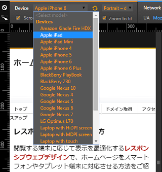
アクセス解析を確認し、アクセス数の多い端末については重点的に対応していくとよいでしょう。
「viewport」を設定しないデフォルトの状態
当ホームページをスマートフォン（iPhone5）で閲覧してみると、viewportを設定していないデフォルトの状態ではこのように表示されます。
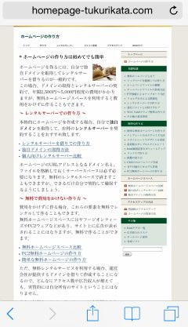
これでは文字が小さく読みにくいです。
この原因についてですが、iPhoneのSafariではサイトを閲覧した際、デフォルトの状態では横幅の表示領域を980pxとした上で、それをスマホの解像度まで縮小して表示するからです。
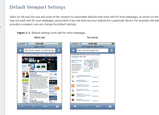
つまり、Safariでは一般的なサイトの横幅を「980px」とみなし、それを端末のデバイス幅まで縮小して表示させることで、どのサイトでも無難に表示する仕様になっています。
公式サイトによると、これでほとんどのウェブページでうまく機能するとのことですが、横幅はサイトによってバラバラですので、中には表示が狭くなってしまうケースもあるようです。また、本来「980px」のサイトをスマホのデバイス幅の320px～414pxあたりまで縮小して表示させるため、デフォルトの状態では文字が小さく表示されます。
当サイトについては、レイアウト幅は810pxのため、表示領域がデフォルトの「980px」の状態では左右に余白があきます。
また、スマホのデバイス幅まで自動で縮小して表示されるため、デフォルトの状態では縮小されたものを閲覧していることになります。
これでもピンチアウトで拡大すればかろうじて読めはしますが、できるだけレスポンシブ・ウェブデザインで表示を最適化し、こちらのように縮小せずに表示させると見やすいサイトになります。
■レスポンシブサイトの例
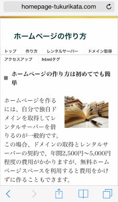
■pxの表示について
※このページの「px」は「csspx」の意味で使っています。iPhone5の仕様は「1,136 x 640ピクセル」となっていますが、高解像度のRetinaディスプレイで２倍となっているため、このページでは640pxの半分でデバイス幅を「320px」としています。また、スマホはiPhoneだけではありませんが、便宜上、iPhoneを例にご紹介しております。
「viewport」のメタタグで980pxのデフォルト設定を解除
レスポンシブ・ウェブデザインで縮小せずに最適化する方法としては、まずはデフォルトの「横幅980pxでの表示領域の設定」を解除し、スマホの実際の横幅で表示領域をとるようにします。
例えば、iPhone5の場合は「320px」、iPhone6の場合は「375px」などとなりますが、デバイスの横幅でそのまま表示領域をとるようにします。
この場合、HTMLファイルのheadタグ内に「viewport」のメタタグを追加して設定しますが、仮に320pxで設定する場合は以下のように記述します。
<meta name="viewport" content="width=320">
けれども、スマホによって解像度が異なり、320pxとは限らないため、実数ではなく「端末の幅」を意味する「device-width」で記述するのが一般的です。
■「viewport」のメタタグ
<meta name="viewport" content="width=device-width">
例えば、このページではheadタグ内のこの箇所に設定しています。
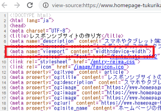
「content="width=device-width"」で「width（幅）」を「device-width（閲覧する端末の幅）」で表示する意味になるため、320pxの小型iPhoneで閲覧すれば「width=320px」となり、768pxのiPadで閲覧すれば「width=768px」で表示されます。
以下は空白のhtmlファイルになりますが、viewportに「device-width」を設定した場合、以下のように閲覧する端末によってwidthに違いが出てきます。
■viewportなし
まず、viewportを何も設定していないデフォルトの状態は上記のように980pxです。
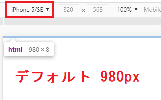
■width=device-width、iPhone5
次に、viewportに「width=device-width」を設定した場合、iPhone5で閲覧した際の表示領域はデバイス幅の320pxになります。
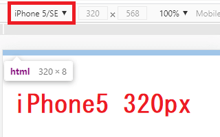
■width=device-width、iPad
iPadで閲覧した場合は768pxで表示されます。
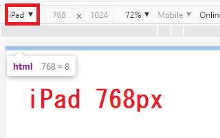
■width=1000、iPhone5
一方、「content="width=1000"」などのように、実数で決め打ちすることもできますが、この場合はどの端末で閲覧しても1000pxで固定されることになります。
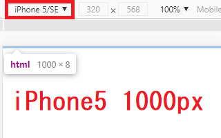
そのため、閲覧する端末に応じてレスポンシブに表示されるよう、実数ではなく「device-width」を設定しておくことをおすすめします。
当サイトを例にしますと、上記のようにviewportを何も設定していないデフォルトの状態は980pxになります。
この980pxに対し、レイアウト幅810pxでサイトを作るとこのようになります。
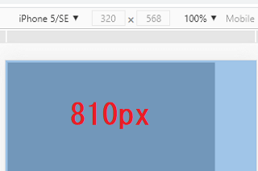
上記の当サイトのデフォルトの状態は、これをセンタリングしたものです。
また、サイトのレイアウト幅を810pxではなく、サイドバーのfloatを解除した上でワンコラムのコンテンツ幅「320px」で作るとこのようになります。
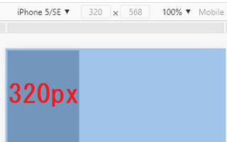
これにviewportでwidth=320を指定して表示領域を980pxではなく、320pxにすれば、縮小されずに表示されるようになります。
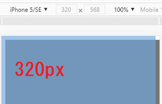
実際の表示はこのようになりますが、縮小されずに見やすく表示されるようになります。
けれども、閲覧する端末によっては320pxとは限らないため、viewportに「width=320」ではなく、「device-width」を設定してどの端末でも対応できるようにします。また、サイトのレイアウト幅も320pxで決め打ちするのではなく、「width:100%;」を指定してレスポンシブに表示させる必要があります。
メディアクエリでサイトの横幅を「width:100%;」に設定
上記の「viewport」を設定した状態でサイトのfloatの回り込みなどを解除し、コンテンツやサイドバー、ヘッダーなどの横幅をデバイス幅「width:100%;」に設定すれば、縮小されずにそのまま表示されるため、文字が小さくなることもありません。
例えば、こちらはiPhone5で閲覧した際ですが、viewportをdevice-widthで設定しているため、iPhone5では表示領域が「320px」になります。また、サイトの横幅もCSSではwidth:100%;に設定しているため、「320px」で表示されています。
この場合、viewportで設定した表示領域と実際の横幅が320pxで合致しますので、拡大も縮小もされない initial-scale=1 の状態で表示され、文字も小さくならずに表示されます。
また、iPadで閲覧した際は表示領域が768pxになりますが、CSSで「width:100%;」と設定しているため、サイトのレイアウト幅もレスポンシブに自動で調節されて768pxで表示されます。
この「width:100%;」の設定をするには、CSSの下部に以下のメディアクエリを追加し、スマホで閲覧した際にだけ適用されるスタイルシートを設定しておきます。
■CSSのメディアクエリ
@media screen and (max-width: 767px) {スマホ用のCSSを記述}
この場合、デバイス幅が最大767pxまでのスマートフォンの端末で閲覧した際に、この箇所のスタイルシートを上書きで適用してくださいという意味になります。ただし、パソコンなど767pxを超える解像度の大きな端末で閲覧した際はこの記述は無視されます。
この「767px」の部分はブレイクポイントと呼ばれており、スマホやタブレット端末、PCなど、何pxで表示を切り分けるかの変更点になります。このブレイクポイントはサイト運営者によってバラバラで、480pxの人もいれば、600pxの人もいますし、これといった決まりはありません。
ブレイクポイントの設定方法
■スマホのブレイクポイント
当サイトではスマホのブレイクポイントを「767px」で設定しています。
これは単純に、ユーザー数の多いiPadが「768 × 1024」からになるため、iPadよりも小さいデバイス幅は全てスマホと見なしたからです。Android系で600px程度のタブレット端末もありますが、全てスマホとさせてもらいました。
大型スマホのiPhone 12 Pro Maxでも「428 x 926」のため、ブレイクポイントを「767px」以下とした場合、縦向きの「428px」の場合はこれで収まることになります。横向きで使用した場合は「926px」で外れてしまいますが、この場合はタブレット端末の設定で表示するようにしています。
ただ、シェアは低いものの、600px程度のタブレット端末もあるため、「599px」以下をスマホ、「600px」以上をタブレット端末と考えるのもよいかもしれません。
以下のサイトからCSVデータをダウンロードして確認してみますと、タブレット端末の１割程度は600px前後の大きさとなっています。
参考：Tablet Screen Resolution Stats Japan | StatCounter Global Stats
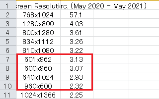
このあたりはサイト運営者によると思いますが、解像度のシェアやスマホの横向きでの使用なども考え、総合的に判断されることをおすすめします。
■タブレット端末のブレイクポイント
タブレット端末については、PCサイトと同じ「２カラムや３カラムで表示する方法」とスマホと同じ「ワンカラム」で表示する方法があります。
当サイトではタブレット端末もスマホと同じワンカラムで表示してはいますが、デザイン的にはPCサイトに近く、PC用の設定を流用したかったため、「スマホ用 → PC用 → タブレット端末」の順で記載しています。
もしスマホに近い場合、「スマホ用 → タブレット端末 → PC用」の順で記載した方が効率的と思います。
■PCのブレイクポイント
当サイト運営者のパソコンの解像度を確認してみますと、最小サイズは「800 × 600」となっていましたが、現在、PCでは「1920 × 1080」の解像度が主流となっており、「800 × 600」は除外しても良いと思います。
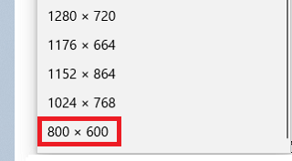
そのため、当サイトではPCのブレイクポイントを「1024 × 768」として切り分けましたが、もう少し大きめで設定してもよいかもしれません。
ただし、タブレットのシェアではiPadの「768 × 1024」の割合が多いため、iPadを横向きで使用した場合は「1024」のPC用の設定で表示されるものと思います。
上記のブレイクポイントで設定する場合、一般的にはCSSに以下のように記述します。
■一般的なブレイクポイントのサンプル
スマホ用の設定
@media screen and (min-width: 768px) {タブレット用の設定}
@media screen and (min-width: 1024px) {PC用の設定}
この場合、もし解像度が「1600 × 900」のPCサイトからアクセスした場合、まずはスマホ用の設定を読み込み、次に768px以上の条件にも当てはまるため、タブレット用の設定も読み込んでスマホ用の設定を上書きします。さらに1024px以上の条件にも当てはまるため、こちらも上書きで適用されて最終的にはPC用の設定で表示されます。
一方、スマホからアクセスした場合はスマホ用の設定しか条件が合わないため、最初のスマホ用の設定のみが適用されることになります。
あるいは、600px程度のタブレットも考慮に入れて以下のように記載するのでもよいかと思います。
スマホ用の設定
@media screen and (min-width: 600px) {タブレット用の設定}
@media screen and (min-width: 1024px) {PC用の設定}
以前まではPC用の設定を先に記述し、スマホ用の設定を後に記述するのが一般的でしたが、現在はスマホがメインのモバイルファーストが主流のため、「スマホ用（※メディアクエリなし） → タブレット端末 → PC用」の順で指定することをおすすめします。
ちなみに、当サイトでは以下のように設定しています。
■当サイトのブレイクポイント
スマホ、PC、タブレットの共通部分の設定
@media screen and (max-width: 767px) {スマホ用の設定}
@media screen and (min-width: 768px) {PC用の設定}
@media screen and (min-width: 1900px) {高解像度PC用の設定}
@media screen and (min-width: 768px) and (max-width: 1023px) {タブレット用の設定}
あまり上書きしたくない場合、共通する部分のみを最初に書いておき、それぞれを個別に設定するのでもよいと思います。
最終的にうまく機能しているかを、こちらのモバイルフレンドリーテストでチェックしてみるとよいでしょう。
→ モバイルフレンドリーテスト
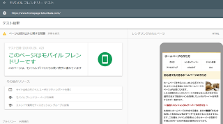
「このページはモバイル フレンドリーです」と表示されれば、問題ありません。
もしスマホでくずれて表示されている場合、画像や要素など、サイト内で横幅が320px以上で設定されているものがあるはずです。width幅を実数で指定するのではなく、width:100%;などと指定することをおすすめします。
また、特に画像でくずれてしまうことが多いため、img {max-width: 100%;height: auto;}なども記述して縮小しておくとよいでしょう。